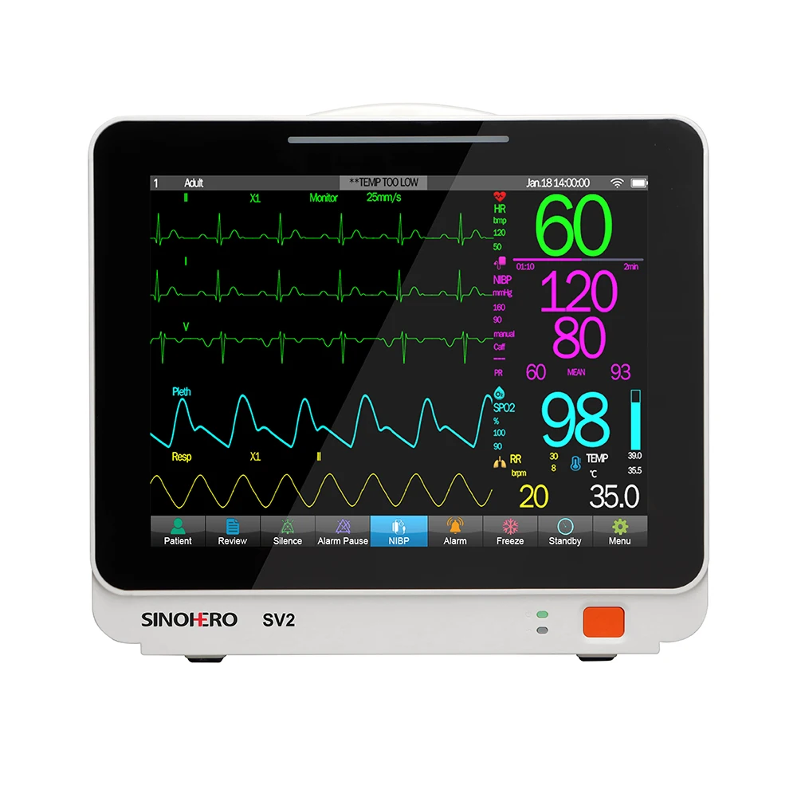
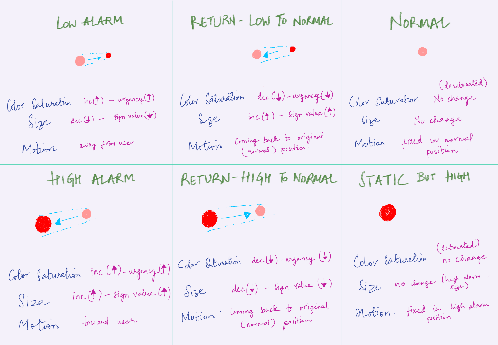
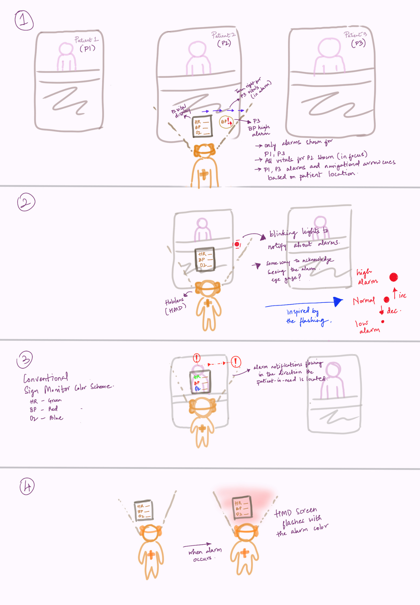
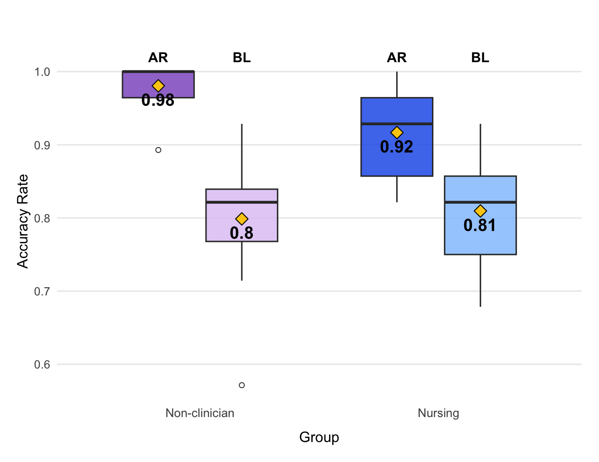
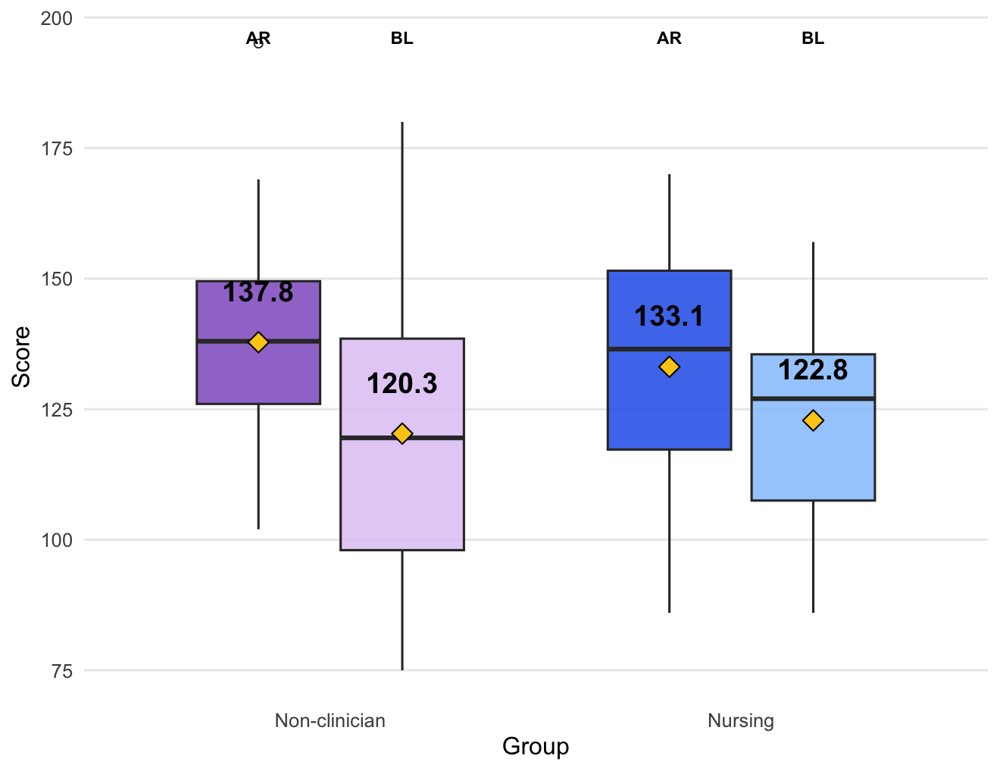

VitalViz: AR-Based Vital Sign Monitoring
ICUs and operating rooms are saturated with auditory alarms that clinicians increasingly tune out — a well-documented phenomenon called alarm fatigue. At the same time, the monitors triggering those alarms are almost never where a clinician is looking. I designed and evaluated VitalViz, an AR-based vital sign display for Microsoft HoloLens 2 that replaces traditional audio alarms and waveform traces with animated, color-coded 3D spheres — always visible in the clinician's field of view, regardless of where they look or stand. A two-phase controlled user study with 20 participants (11 non-clinicians + 9 nursing students) demonstrated that VitalViz significantly improved alarm detection accuracy and multitasking performance compared to a conventional monitor replica, with no trade-off in trend interpretation.
AR 0.98 vs. baseline 0.80
Higher game scores under AR
2 groups · REB-approved
Alarm accuracy, both groups
Problem Space
Clinicians are losing the battle against alarm noise
Vital sign monitors are indispensable in critical care — but the way they communicate urgency is broken. In a typical ICU, a clinician may face up to 1,000 alarms in a single shift. Most are non-actionable. The result is alarm fatigue: a progressive desensitisation that makes it harder to catch the alarms that truly matter.

A conventional bedside vital sign monitor showing numerical values and waveform traces.
Conventional monitors present physiological data — Heart Rate, Blood Pressure, and Oxygen Saturation — as color-coded numerical values paired with continuous waveform traces, with urgency communicated through flashing lights and auditory tones.
The problem is that clinicians are rarely where their monitor is. Research shows 30% of visual attention during critical incidents goes to these displays — time spent turning away from the patient to seek out a screen that is often not even in their line of sight.
In OR settings, the anesthesia machine and its monitor are often positioned directly behind the clinician during procedures — completely outside the natural line of sight when it matters most.
Alarm Fatigue & Noise Overload
ICUs and ORs already exceed WHO's recommended noise limit of 35 dB. Heavy reliance on audio alarms compounds this — overwhelming clinicians, disrupting patient recovery, and training staff to ignore sounds that once demanded attention.
Limited Visibility & Accessibility
Monitors are fixed to bedsides. Clinicians must physically redirect their gaze — and often their entire posture — to check a value. This constant context-switching fragments attention at the moments it matters most.
High Cognitive Interpretation Load
Reading waveforms and numbers requires active mental effort: read the value, recall the normal range, compare, decide. Under high workload, this burden compounds. One participant said plainly: "I had to do some math to know if it was high or low."
A clinician forced to divert attention from the patient to consult a side-mounted monitor — a routine occurrence that fragments situational awareness.
Prior AR-based vital sign monitoring research existed, but all surveyed systems largely preserved traditional representations — numeric values, waveform traces, audio alarms — simply ported into an HMD. No existing system had fully departed from the conventional format to explore whether alternative visual encodings alone could maintain clinician awareness.
VitalViz was designed to answer that question directly — and to demonstrate that awareness of vital sign states can be maintained through visual cues alone, without relying on sound.
Design Solution
Vitals that follow you — not the other way around
VitalViz places vital sign information permanently in the clinician's field of view through a wireless Head-Mounted Display. No audio alarms. No waveforms to decode. Just three animated 3D spheres whose visual behaviour at any moment tells the complete story of a patient's state.
VitalViz prototype — vital spheres responding to simulated alarm states across normal, low alarm, high alarm, and return-to-normal conditions.
- Three color-coded 3D spheres represent HR (green), BP (red), and SpO₂ (blue) — following established clinical color conventions
- Field-of-view anchoring — display is always visible regardless of where the clinician looks or stands
- Visual-only alarm encoding eliminates audio entirely — addressing alarm fatigue at the source
- Wireless HoloLens 2 removes cables and fixed co-location constraints; hands-free via gaze-dwell interaction
- Gaze-triggered numerical values appear on 2-second dwell — minimal by default, precise on demand
The human visual system is better at detecting shapes, colours, and movement than at reading numbers. VitalViz encodes alarm state through three simultaneous, redundant visual channels — ensuring the alarm registers even under high cognitive load or divided attention.

State encoding diagram — how colour saturation, size, and Z-axis movement combine to represent normal, high alarm, low alarm, static, and returning-to-normal states for each vital sign.
Design Decisions
Every major design choice was tested in iterative consultations with a practicing anesthesiologist and validated against HCI literature. None were arbitrary.
Why 3D spheres, not flat 2D indicators?
An early prototype used in-place flashing 2D circles. During review, the anesthesiologist noted this didn't leverage AR's defining capability: depth. Replacing circles with spheres — which look volumetrically consistent from any viewing angle — allowed Z-axis movement to encode alarm direction meaningfully. A sphere growing and moving toward you maps intuitively to a rising value; one shrinking and receding maps to a falling one.
Why visual-only, with no audio backup?
Existing AR systems retained audio because the assumption was that visual-only cues couldn't adequately command attention. We challenged this directly — designing sphere animations to be salient enough to replace audio entirely, then testing that hypothesis with a controlled user study. The approach also addresses a secondary problem: reducing noise burden on both clinicians and patients.
Why redundant encoding across three channels?
Colour saturation alone creates accessibility issues for colour-blind users and is harder to parse in peripheral vision under high cognitive load. Layering size, saturation, and Z-axis motion means any single channel can be missed — all three together cannot. Redundancy is deliberate design, not over-engineering.
Why gaze-dwell interaction, not voice or touch?
Clinical environments are already noisy — voice commands create interference and privacy concerns. Touch requires clean, sterile hands. Gaze-dwell keeps hands completely free and adds no auditory burden. Voice control was specifically avoided based on HCI research guidance on noise in medical environments.
Research & Ideation
Designing from inside the clinical problem
Understanding what actually fails about conventional monitoring required going beyond the literature. VitalViz's design was shaped through iterative consultations with a practicing anesthesiologist — grounding every decision in real clinical workflow constraints.
Expert Consultation & Field Observations
"I might be out of the ICU, and don't have access to auditory alarms…"
Anesthesiologist — clinical collaborator, 12+ years experience"The anesthesia machine (with the patient monitor) is behind them and usually to the right."
Field observation from clinical consultation"It's really simple… the shape and the color, it just tells me what I need to know."
PN04 — Nursing participant, post-study interviewThroughout the design process, I worked closely with Dr. Joseph Schlesinger, an anesthesiologist, whose firsthand perspective surfaced constraints that would never have emerged from desk research alone.
These conversations directly shaped two core decisions: using a wireless, head-worn display (eliminating fixed-placement constraints), and eliminating audio alarms entirely (addressing the noise burden that persists even when clinicians leave the monitored space).
Continuous feedback was also received from Prof. Jeremy Cooperstock (HCI) to validate interaction design against usability standards beyond clinical relevance.
Ideation — Getting to the Sphere
The core challenge was creating alarm indicators salient enough to command attention without becoming a new source of distraction. I explored multiple directions before converging on animated 3D spheres.

Early ideation sketches — exploring HUD-style overlays, icon-based indicators, and spatial anchor configurations before committing to the sphere encoding.
A vital sphere animating through its state transitions — normal → high alarm → static → returning to normal.
Initial prototypes used flat, in-place flashing 2D circles. These were reviewed with the anesthesiologist and rejected — the flat format failed to leverage AR's depth dimension, and the motion felt arbitrary rather than meaningful.
Switching to 3D spheres with Z-axis movement created a display language that maps directly to clinical intuition: something growing and moving toward you signals a rising, dangerous value. Something shrinking and receding signals a value dangerously falling.
Changes in size, colour saturation, and motion signal alarms — for example, a larger, brighter red BP sphere moving toward the viewer encodes a high alarm (e.g., 150/90 vs. normal 125/70) without any numbers needing to be read.
Evaluation & Findings
A rigorous test under real cognitive pressure
Designing a more salient display is one thing. Proving it works under the divided-attention conditions that define clinical work is another. We conducted a two-phase, within-subjects user study comparing VitalViz against a replica conventional monitor — deliberately structured to stress both conditions equally.
(non-clinicians)
(nursing group)
under AR
Study Design
Design
Within-subjects, counterbalanced order
Participants
20 total: 11 non-clinicians (Phase 1) + 9 nursing students (Phase 2)
Duration per session
2 conditions × 2 blocks × ~7 min each
Alarms
28 primary + 3 secondary patient alarms per condition
Distractor Task
Modified Fruit Ninja — go/no-go visual task simulating divided attention
Ethics
REB-approved · McGill University #24-03-061
Why Fruit Ninja? The game's go/no-go structure requires rapid decision-making under time constraints and holds participants accountable for performance — mirroring how clinicians divide attention between patients and concurrent care tasks. The setup was deliberately biased toward the baseline condition (conventional monitor placed in peripheral vision) to make any AR advantage more meaningful.


Qualitative Findings
Post-study interviews were transcribed and analysed via thematic analysis. Four themes emerged consistently across both participant groups.
Visual encoding reduces cognitive effort
Most non-clinician participants found the sphere animations self-explanatory — identifying alarm states without consulting the reference sheet or performing mental arithmetic. Nursing participants similarly appreciated the directness of the encoding even when already familiar with traditional displays. "It's very salient… I didn't have to pay much attention to the values." — P04 · "Really easy to see when there was a change because it was yelling at you." — PN03
Clinicians want continuous numerical values
The gaze-triggered numeric display was appreciated by some for its minimalism, but most — especially nursing participants — wanted numbers always visible. Seven of nine nursing participants supported always-on numerical values. One suggested a middle ground: numbers appearing automatically during alarms rather than requiring intentional gaze dwell. "I would like to obviously have the numbers just so that if ever I need to look at it." — PN04
Central placement reduces physical strain
Participants consistently noted that having the display in their central field of view reduced physical effort and neck strain — eliminating the constant head-turning required by the peripheral conventional monitor. "I was breaking my neck trying to keep my eyes on the traditional monitor… I think I got a crank in my neck." — P11
Hardware and anchoring limitations remain
The most common design concern was that the AR display — anchored to a fixed QR marker — disappeared when participants looked down or turned their heads too far. Sphere colour contrast was also reported as insufficient by some, particularly for the secondary patient. HMD weight, hygiene, and patient-trust concerns were raised by nursing participants.
User Preference
Non-clinician group (n = 11)
AR preferred for salient visual alarms and lower interpretation effort. Those preferring baseline cited headset discomfort.
Nursing group (n = 9)
Baseline preferred for always-visible numbers matching existing clinical workflow — but 3 of 9 wanted AR encoding with continuous numerical values.
Reflections
What I learned — and what I'd do differently
Domain expert access is irreplaceable
Iterative consultations with the anesthesiologist shaped every major design decision — from abandoning 2D indicators for 3D spheres, to eliminating audio entirely, to choosing gaze-dwell over voice input. No amount of literature review would have surfaced these constraints as precisely or quickly. For healthcare UX especially, proximity to the actual clinical environment is not optional.
Designing for emerging platforms means reasoning from first principles
AR doesn't have an established interaction playbook the way web or mobile design does. Every decision — how to anchor content, handle depth, balance visual presence with peripheral awareness — required reasoning from perceptual psychology and cognitive science rather than pattern libraries. This made the work harder and more interesting in equal measure.
Study design is as critical as interface design
The validity of a user study lives entirely in the quality of its setup. Getting the distractor task calibrated, controlling for learning effects through counterbalancing, replicating realistic monitor placement, and selecting appropriate statistical models (GLME rather than simple ANOVA, to account for block ordering) required as much rigorous thought as the prototype itself.
Performance and preference don't always align — and that's the most important finding
The nursing group's clear preference for always-visible numerical values — despite performing significantly better with AR — was the study's most instructive result. It reveals a gap between objective performance and subjective trust with direct implications for clinical adoption. Designing a system that works better isn't enough if intended users don't feel confident using it. Familiarity, professional norms, and perceived risk are as real as latency and accuracy.
What I'd do differently
The Fruit Ninja distractor task served its methodological purpose well, but doesn't fully replicate the procedural cognitive load of real clinical work — where clinicians perform hands-on tasks while simultaneously monitoring patients. Future studies would use a more ecologically valid dual task, such as a simulated clinical procedure. I'd also expand the participant pool to include practicing anesthesiologists and OR nurses in their actual environments, and replace QR-code anchoring with marker-free patient recognition to support natural, unrestricted head movement.
Future Directions
Marker-free anchoring using patient recognition rather than QR codes, supporting unrestricted head movement
Live sensor integration replacing pre-generated sequences with real physiological data feeds
Multi-level urgency encoding to distinguish very-low, low, high, and very-high alarm states
Pre-alarm trend encoding — subtle animation showing values approaching threshold within normal range
Lighter HMD platform — glasses-form-factor devices to address comfort, patient-trust, and hygiene concerns
In-situ clinical validation with practicing clinicians in real OR and ICU environments
Curious about this project?
The full 80-page thesis covers the complete literature review, system implementation, statistical analysis, and design implications.